● 서울예술대학교 디지털아트전공 · 생성형 인공지능 리터러시
물리적 공명을
디지털 노이즈로
생성형 AI와 부딪히며 만든 나의 작업들
소속 / 전공
서울예술대학교 디지털아트전공
학번 / 이름
2423027 강민혁 (acornriver)
교과목명
생성형 인공지능 리터러시
발표 시간
약 5분 (최대 8분 이내)
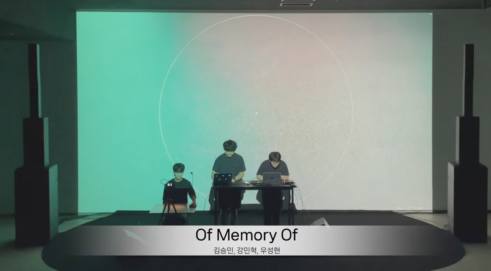
▶
of memory of 영상 보기
PORTFOLIO PRESENTATION 2026 · SEOUL INSTITUTE OF THE ARTS
01 / 08
WORK ETHIC & WORKFLOW
01 · 작업의 출발점과 태도
02 / 08
감각에서 출발해, 코드로 번역한다
기술 스펙이 아니라, 공간과 신체가 만드는 경험이 먼저입니다
작업의 재료 Physical → Digital
- 그림자 손 그림자의 움직임을 공간음향 노이즈로
- 빛 조명의 깜빡임을 모스부호로 해석
- 도시의 캡션 거리의 바코드와 웹 댓글
- 언어 입력한 문장을 감열지로 출력
- 근육 수축할 때 나는 진동 소리(MMG) 수음
공통의 태도
하나의 공식으로 찍어내지 않고, 작품마다 현장이 요구하는 물성에 맞춰 시스템을 새로 짠다.
AI와 일하는 방식 Antigravity
- 대화로 코딩 아이디어를 던지고, 코드를 받고, 오류를 같이 잡는다
- 강도 조절 작업 난이도에 맞춰 에이전트 강도를 바꿔 토큰을 아낀다
- 현장 확인 화면에서 돌던 코드가 실제 장비와 전시장에서도 도는지는 내가 확인하고 고친다
제작 파이프라인
감각적 구상
→
AI와 코드 구현
→
장비 연결
→
현장 확인 · 튜닝
01. PERSPECTIVE & WORKFLOW
02 / 08
CASE STUDY 01
02 · 작품 사례 1 : 그림자와 빛
03 / 08
그림자가 찢는 사운드, 조명이 치는 모스부호
눈에 보이는 왜곡과 깜빡임을 감지해서 소리와 신호로 바꾸는 작업
of memory of 2025 · 퍼포먼스
acornriver, 김승민, 우성현▶
공연 영상 보기 (사운드 포함)
- 내가 만든 부분 Python 실루엣 트래킹, OSC로 공간음향 위치 데이터 전송
- 감각 손이 중심에서 멀어질수록 화면 왜곡과 피드백 노이즈가 커진다
신호 흐름
손 그림자 왜곡
→
Python 실루엣 감지
→
OSC → 공간음향
빛의 언어 2025 · 웹 인터랙티브
acornriver (단독)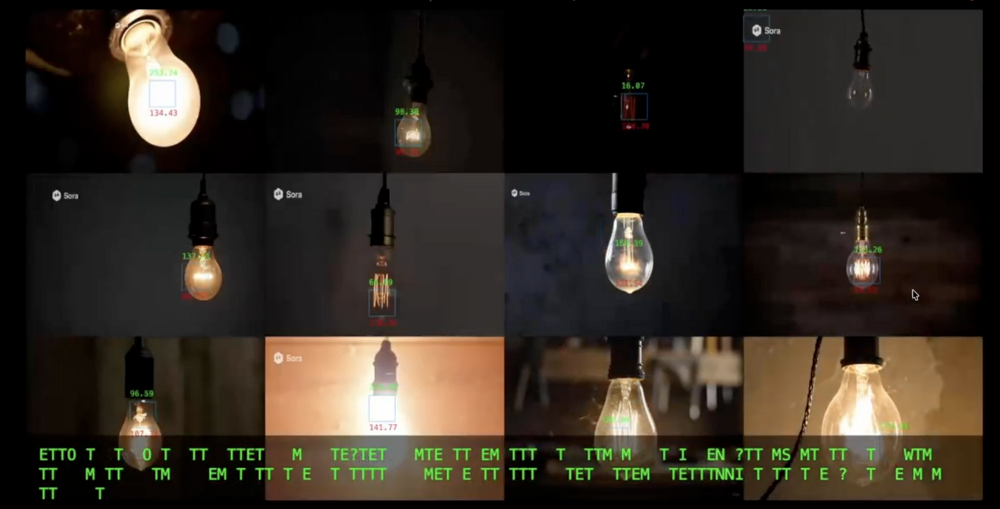
▶
빛의 언어 영상 보기
- AI 활용 생성형 AI로 불규칙하게 깜빡이는 조명 영상 제작
- 구현 p5.js 사운드 라이브러리로 깜빡임을 모스부호로 읽어 텍스트·사운드로 출력
💡
READY TO BLINK
체험용 시뮬레이션 · 입력한 글자를 모스부호로 바꿔 불빛과 소리로 재생합니다. 실제 작품의 영상 분석이 아닙니다.
신호 흐름
깜빡이는 조명 영상
→
p5.js 모스부호 해석
→
텍스트 / 사운드
02. CASE STUDY: SHADOW & LIGHT
03 / 08
CASE STUDY 02
03 · 작품 사례 2 : 공간과 언어
04 / 08
도시의 캡션, 출력되는 말
화면 안에 있던 텍스트를 거리와 종이 위로 꺼내는 작업
다민프로젝트 01 2025 · 웹 & 도시
acornriver, daon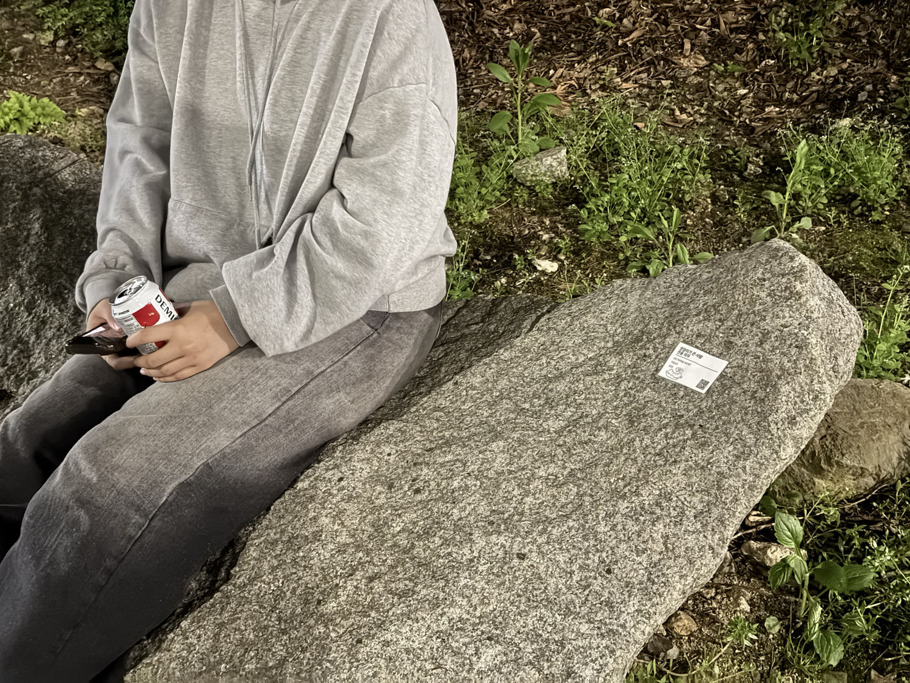
- 도시 개입 거리 곳곳의 사물과 장소에 캡션을 붙인다
- 웹 시스템 캡션 위치를 기록하고 댓글을 받는다
- 바코드 부착물마다 붙은 바코드로 웹에 접속한다
구조
거리 사물에 부착
→
바코드 스캔
→
웹 아카이브 · 댓글
감열–소각 2025 · 피지컬 설치
acornriver (단독)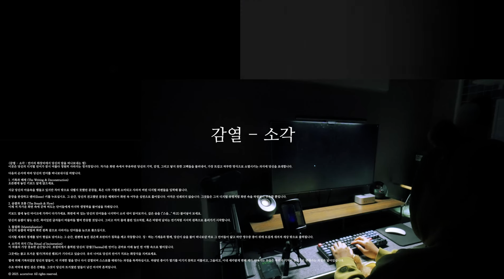
▶
감열–소각 영상 보기
- 언어의 화장터 입력한 문장이 화면에서 흩어진 뒤 감열지로 출력된다
- 구현 텍스트·소리(숨결) 인식 + 감열지 프린터 출력
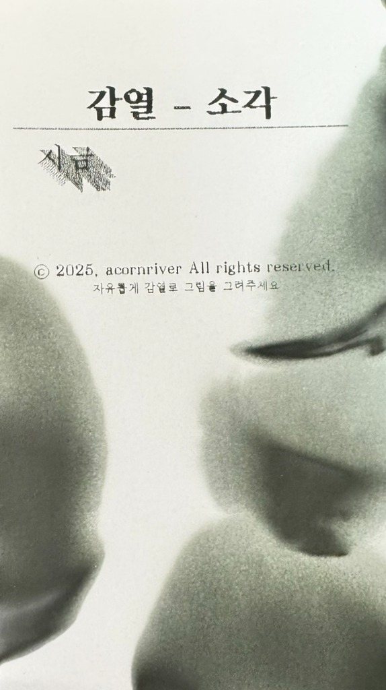
감열지 인쇄 디테일
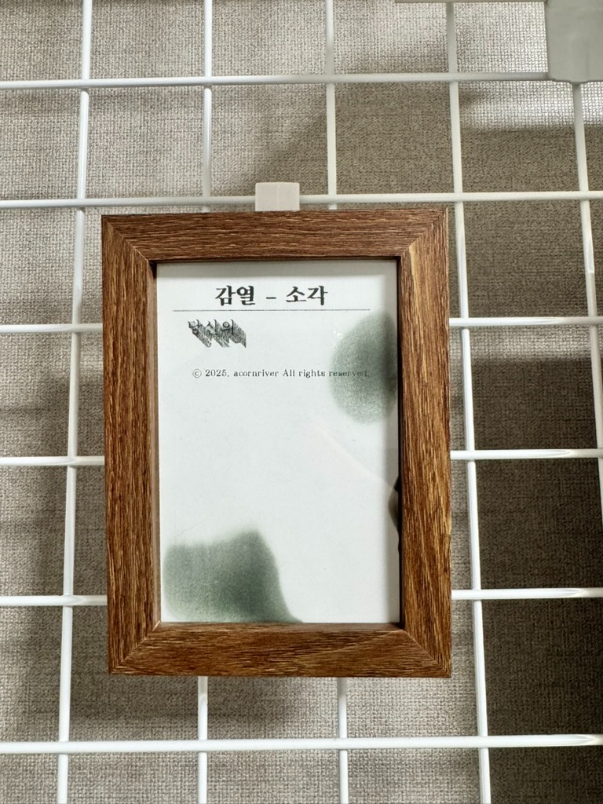
전시 프레임
감열지에 출력된 문장들을 프레임에 걸어 전시한 모습.
문장을 입력하고 출력을 누르면
영수증이 나옵니다
영수증이 나옵니다
체험용 시뮬레이션 · 실제 작품의 출력 시스템이 아닙니다.
신호 흐름
문장 · 숨결 입력
→
인식 · 처리
→
감열지 출력
03. CASE STUDY: SPACE & PRINTED WORD
04 / 08
FLAGSHIP PROJECT
04 · 핵심 협업 프로젝트 : 사일런스
05 / 08
사일런스 — 마이크로 듣는 근육의 울림
전극 대신 마이크로 수음하는 MMG, 그리고 OSC·무선 오디오 전송 시스템
현장 아카이브 Art Korea Lab
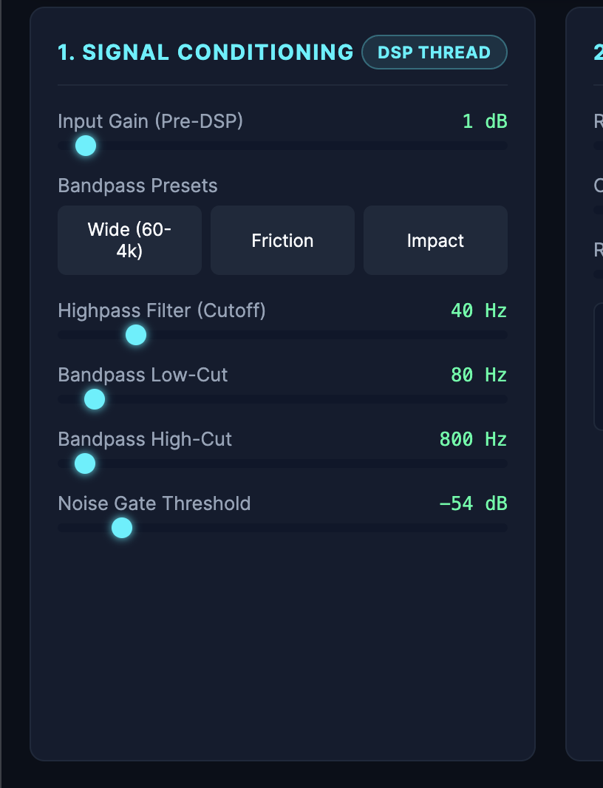
▶
공연 가편 영상 (Google Drive ↗)
현장 세팅 · Highpass 40Hz / Bandpass 80–800Hz / Noise gate −54dB
🎬 공연 가편 영상 열기 ↗
크레딧
기술감독 · SW 강민혁 / 총괄 기획 정채민
사운드 김승민 / 무용 윤채영, 우성현
기술감독 · SW 강민혁 / 총괄 기획 정채민
사운드 김승민 / 무용 윤채영, 우성현
2년간 2,000만 원 지원사업 · 2026 종로 아트코리아랩 공연 완료
두 갈래 전송 시스템 MMG · OSC
[OSC] standby
체험용 시뮬레이션 · 실제 센서 데이터 아님
흐름 1 · 제어 신호
DJI Mic 2 밀착 수음
→
저주파 감지(DSP)
→
OSC 트리거
흐름 2 · 오디오 스트리밍
마이크 입력
→
내부망 무선 스트리밍
→
사운드 협업자
전기 신호(EMG)가 아니라 근육이 내는 진동 소리(MMG, Mechanomyogram)를 수음 · github.com/acornriver/mechanomyogram
04. FLAGSHIP COLLABORATION: SILENCE
05 / 08
TRIAL & ERROR
05 · AI 협업의 민낯과 현장 확인
06 / 08
AI가 열어준 길, AI가 못 본 전압
같은 AI가 한 번은 신의 한 수였고, 한 번은 트랜스듀서를 태웠다
사일런스 신의 한 수
AI는 내가 몰랐던 구조를 제안했다.
- 웹으로 소리를 보내는 시스템의 핵심 엔진 구조를 바꿔보자고 제안했다
- 내 지식 밖에 있던 방식이었지만 적용해 봤다
- 현장에서 안정성과 음질이 눈에 띄게 좋아졌다
배운 것
AI는 오타를 고쳐주는 도구를 넘어, 내가 몰랐던 선택지를 보여주는 쪽에서 가장 쓸모 있었다.
철의 언어 v2 시행착오
AI는 현장의 전압까지 책임지지 않았다.
- AI가 추천한 앰프·트랜스듀서 조합을 연결했다
- 트랜스듀서가 계속 손상됐다
- 전압이 맞지 않는다고 판단해 출력이 낮은 앰프로 교체했다
코일 부하: 정상 범위
체험용 시뮬레이션 · 실제 측정값이 아닙니다.
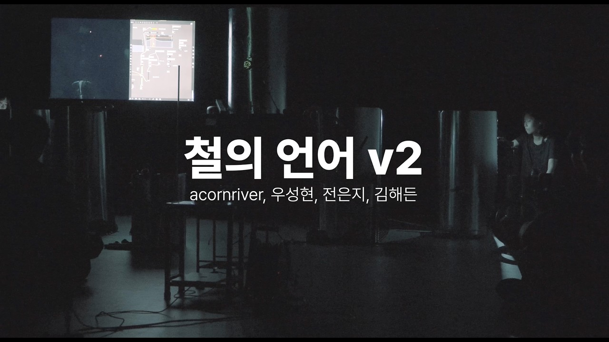
▶
철의 언어 v2 영상
생성된 코드와 추천을 활용하는 것만큼, 실행하고 확인하는 과정이 중요했다.
05. AI COLLABORATION & PHYSICAL REALITY
06 / 08
OPEN ACCESS & ARCHIVE
06 · 공유와 아카이빙
07 / 08
작품과 구현을 함께 공개하기
웹 아카이브 acornriver.work 와 GitHub 저장소로 과정까지 기록합니다
개인 웹 아카이브 acornriver.work
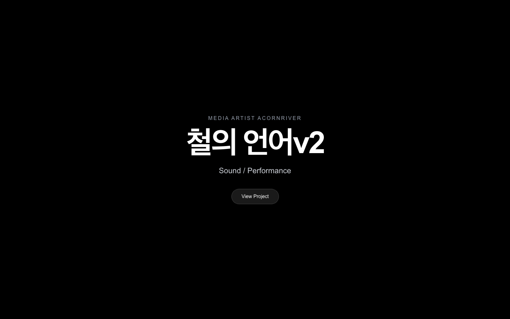
🔗
acornriver.work 열기 ↗
오늘 다루지 못한 설치·사운드 작업 기록은 웹 아카이브에서, 구현 코드는 GitHub에서 볼 수 있습니다.
바로 들어가기 Public Access
작품별 공개 저장소 (GitHub)
사일런스 · github.com/acornriver/mechanomyogram
of memory of · github.com/acornriver/ofmemoryof
감열–소각 · github.com/acornriver/thermal-poetry
다민프로젝트 01 · github.com/acornriver/DaonminUrbanGalleryProject
of memory of · github.com/acornriver/ofmemoryof
감열–소각 · github.com/acornriver/thermal-poetry
다민프로젝트 01 · github.com/acornriver/DaonminUrbanGalleryProject
06. OPEN SOURCE & WEB ARCHIVE
07 / 08
VIDEO SHOWCASE & Q&A
아카이브 · 질의응답 및 영상 시연
08 / 08
작업 아카이브
카드를 누르면 영상이 시네마 모드로 재생됩니다
▶ 2026 · 사운드 퍼포먼스
17 철의 언어 v2
트랜스듀서 · 철판 공명 피드백영상 보기 ↗
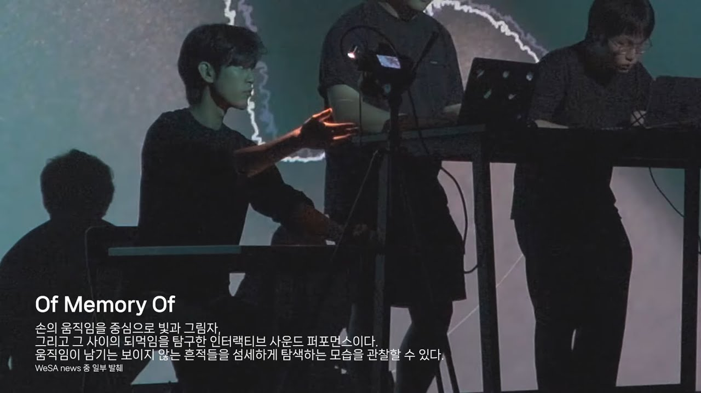
▶ 2025 · 퍼포먼스
11 of memory of
손 그림자 추적 · 공간음향 노이즈영상 보기 ↗
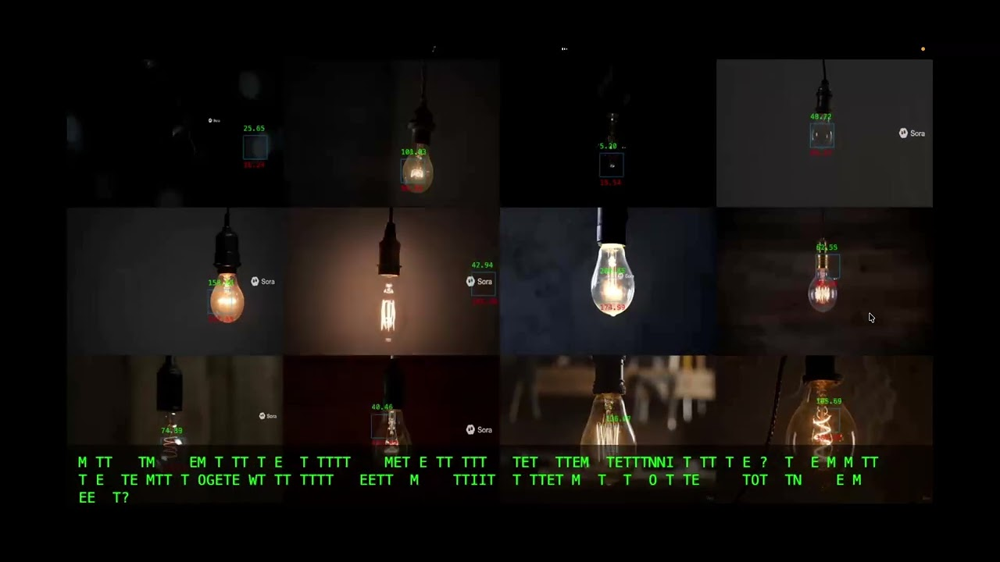
▶ 2025 · 웹 인터랙티브
14 빛의 언어
AI 점멸 조명 · p5.js 모스부호영상 보기 ↗
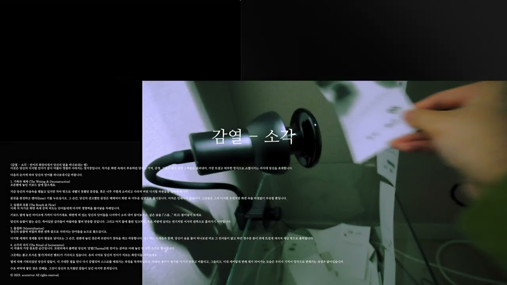
▶ 2025 · 피지컬 설치
16 감열 - 소각
입력한 문장 · 감열지 출력영상 보기 ↗
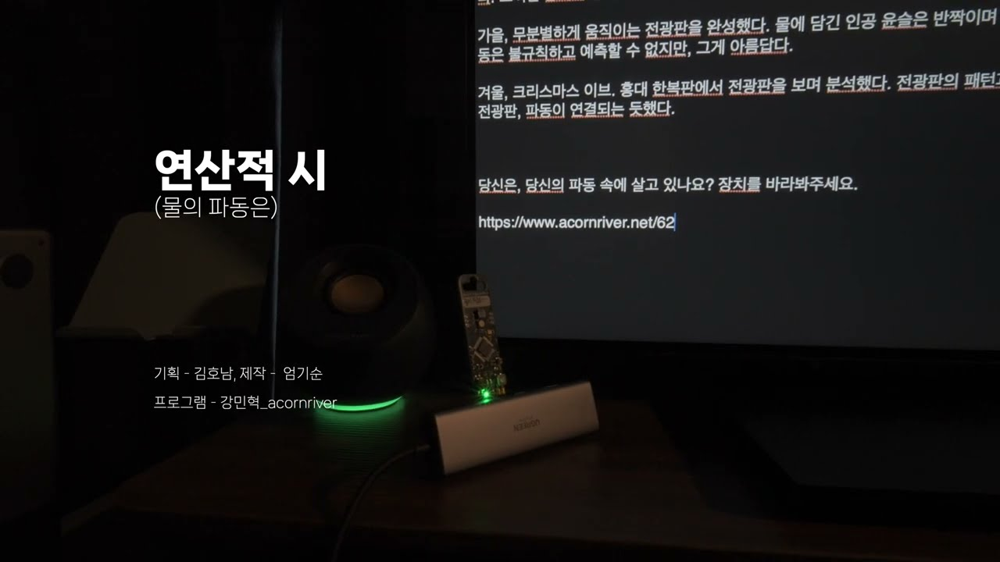
▶ 2025 · 백남준아트센터
10 연산적 시
백남준아트센터 전시 참여작영상 보기 ↗
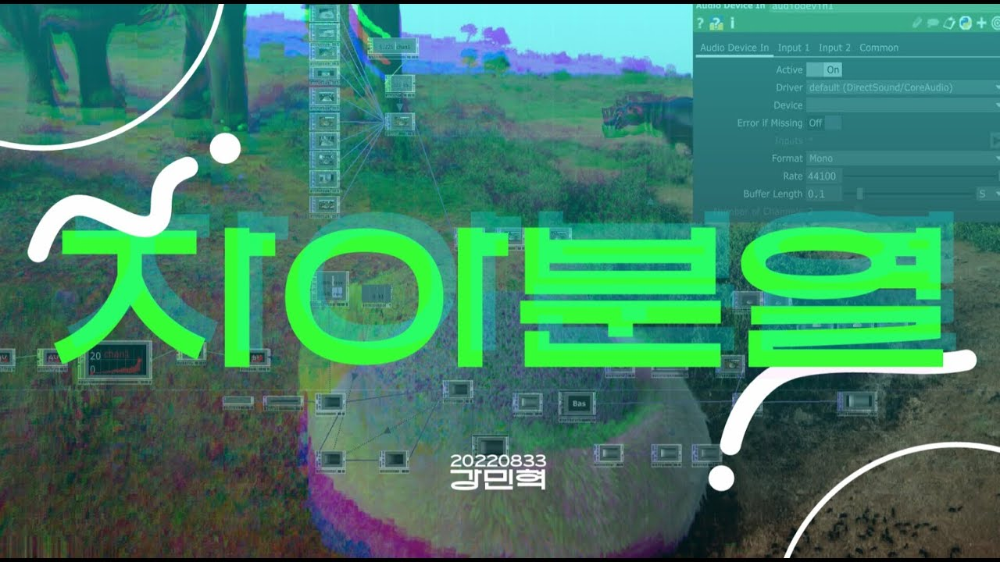
▶ 2023 · 인터랙티브 설치
01 자아분열
AI 배경 · 마이크 디스토션영상 보기 ↗
07. ARCHIVE CONSOLE & Q&A
08 / 08